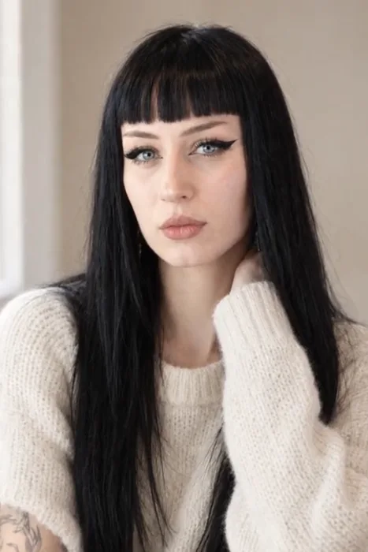
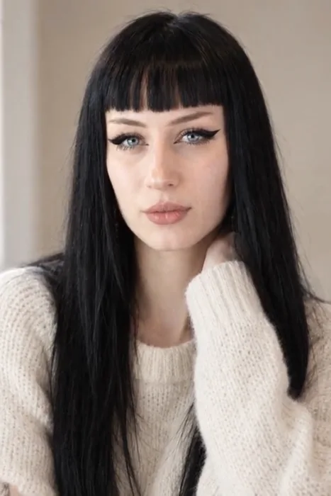
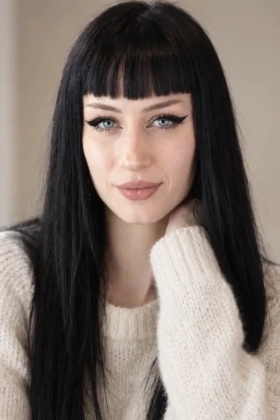
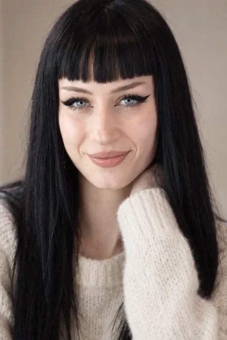
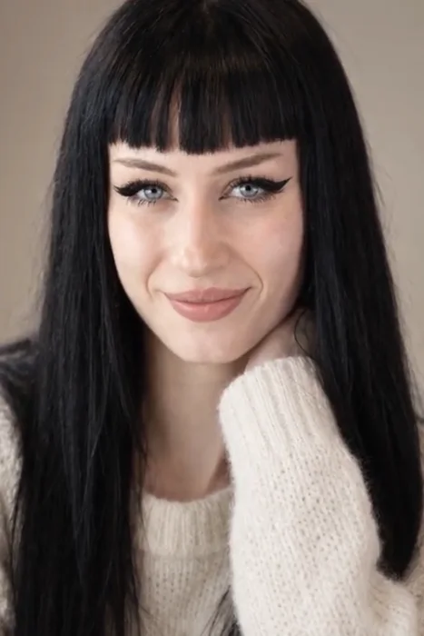
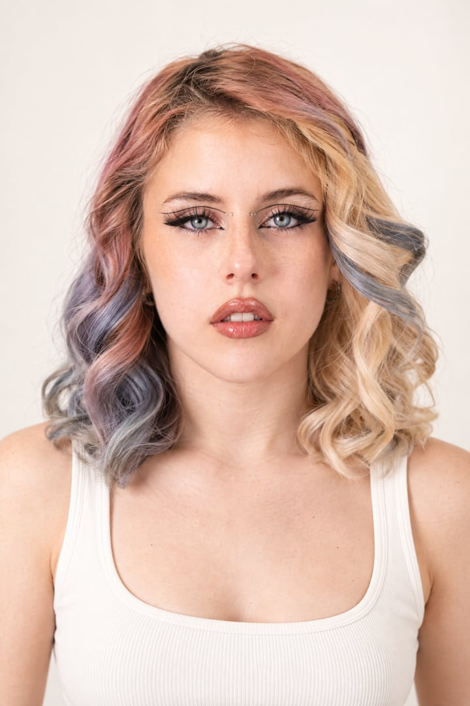

Via la foto a tutto schermo con il titolo sopra, la lente che gira e il riquadro di verifica: erano troppe cose insieme e leggevano come “sito fatto in AI”. Qui il titolo sta su fondo chiaro, a sinistra; a destra c’è lei, in un loop di 5 secondi preso dal nostro Anima (un clip vero, già fatto dal nostro motore: ha solo una spinta lenta e un sorriso che compare). Sopra, due indicazioni piccole e vere: il consenso e il certificato. Nient’altro.
Ogni volto qui ha detto sì.
Foto e video con persone vere che hanno dato il consenso. Ogni scatto è certificato e paga chi ci mette la faccia.
Il consenso si legge prima di ogni scatto, non dopo.
LA FRASE DEL TITOLO, DA SCEGLIERE
Qui l’animazione ti piaceva: la tengo. Cambia l’aria: il titolo non finisce più sopra le facce, la foto resta una finché non scorri e poi si apre in due, ognuna con il suo conto (chi la crea paga, chi ci mette la faccia riceve). Il vuoto fra hero e questa scena sparisce perché la scena parte appena finisce l’hero. Tocca il bottone per rivedere l’apertura.
Una foto, due persone contente.
Chi la crea paga il prezzo giusto. Chi ci mette la faccia riceve la sua parte, subito. Revoca quando vuole.
Un solo gesto che fa capire tutto: tocchi “Si muove” e la stessa persona della foto prende vita, per cinque secondi. Sotto, i sei fotogrammi del video, ognuno con il volto misurato. Il messaggio è uno: il sì vale anche per il video, e il video non è un’invenzione, è lei.
Lo scatto si muove. Lei resta lei.
Da uno scatto certificato, cinque o dieci secondi di video. La persona ha detto sì anche al video, e il suo volto viene misurato fotogramma per fotogramma.
- Mai audio, mai parole messe in bocca.
- Un fotogramma che non tiene non arriva a te.
- La persona è pagata anche per il video.

94%
93%
92%
93%
94%Le percentuali sotto i fotogrammi sono un esempio del mockup: nella pagina vera usiamo la misura reale del clip.
Come hai chiesto. Il resto dell’animazione (la fila che scorre di lato mentre scorri in basso) resta com’è. Sul telefono scorre col dito.
Persone, non prompt.
Tutti i 10 voltiLe carte impilate si sovrapponevano: nel punto 3 la carta sotto restava a metà, con il titolo tagliato, sotto quella nera. Qui i quattro passi stanno a sinistra, e a destra c’è quello che succede davvero in ogni passo, con la foto di Gabriella e gli stessi elementi del prodotto. Sul computer il riquadro resta fermo e cambia mentre scorri; sul telefono ogni passo ha il suo disegno sotto, uno dopo l’altro, niente si sovrappone. Nel mockup puoi toccare un passo.
Come funziona.
Invece di quattro schede statiche, la scena fa vedere il prodotto: la frase si scrive, il direttore accende le pillole (luce, vestiti, formato) e poco dopo arriva lo scatto, con il volto misurato. La stessa cosa che succede in Crea, in dieci secondi. Sotto, cosa si può fare dopo. Si avvia quando la sezione entra nello schermo; ripartenza col bottone.
Una frase. Il resto lo fa il set.
Scrivi cosa succede. Il set sceglie una persona vera del registro, la mette in scena e misura quanto resta se stessa.

ChiaraLetta contro i limiti di Chiara: si può fare

Qui sta la comunicazione che mi chiedi di capire. Oggi “Metti il tuo volto” è un bottone secondario. Propongo di dare alla persona la stessa importanza di chi crea: il suo gemello digitale lavora con il suo sì, lei decide cosa non farà mai, è pagata a ogni scatto e può revocare quando vuole. È l’idea di “AI twin” che si vede nei video, fatta bene: con consenso, controllo e compenso.
Due modi di usare un volto, uno solo di farlo bene.
Foto e video con facce vere, senza rischi legali.
- Persone vere del registro, con il consenso letto prima di ogni scatto.
- Prezzo in chiaro, e se il volto non tiene non paghi.
- Certificato pubblico su ogni scatto.
Il tuo gemello digitale lavora. Tu decidi, e sei pagato.
- Registri il tuo volto una volta e scrivi con parole tue cosa non farà mai.
- A ogni scatto ricevi la tua parte, ogni volta, con il conto in chiaro.
- Revochi quando vuoi, e le copie fuori dal registro le cerca Ward.